Linux文件管理基础（一）
学习目标
1、了解文件命名规则和工作中的建议命名规则 2、会创建和删除目录mkdir/rmdir 3、会创建和删除文件touch/rm 4、了解复制cp和移动mv的区别会使用tar命令进行压缩和解压缩 5、掌握VIM的保存退出wq和不保存强制退出q!掌握VIM的快捷键yy,dd,gg,G,u 6、会使用tail命令查看文件 7、会使用find命令按文件名称查找文件
一、文件命名规则
1、可以使用哪些字符？
除了字符“/”之外，所有的字符都可以使用，但是要注意，在目录名或文件名中，不建议使用某些特殊字符，例如， <、>、？、* 等，尽量避免使用。
如果一个文件名中包含了特殊字符，例如空格，那么在访问这个文件时就需要使用单引号将文件名括起来。
linux的单引号、双引号是有区别的，双引号可以识别特殊符号，单引号，是不做字符转义。
建议文件命名规则：
由于linux严格区分大小写，所以尽量都用小写字母
如果必须对文件名进行分割，建议使用"_"，例如：
yuchao_bj_2022.txt
chaoge.txt
01.txt
02.txt
yunwei.log
yunwei01_linux.txt
2、文件名的长度
目录名或文件名的长度不能超过 255 个字符
尽量不要太长，另外文件名称一定要见名知意，可以使用英文单词
3、Linux文件名大小写
Linux目录名或文件名是区分大小写的。如 yuchao、Yuchao、yuchaO ，是互不相同的目录名或文件名。
不要使用字符大小写来区分不同的文件或目录。
建议文件名一律使用小写字母，做到见名知意最好。
4、Linux文件扩展名
Linux文件的扩展名对 Linux 操作系统没有特殊的含义，Linux 系统并不以文件的扩展名开分区文件类型。
例如，yuchao.exe 只是一个文件，其扩展名 .exe 并不代表此文件就一定是可执行的。
在Linux系统中，文件扩展名的用途为了使运维人员更好的区分不同的文件类型。
二、文件管理命令
在日常工作中，我们经常需要对Linux的文件或目录进行操作，常见操作包括新建，删除，更改，查看，复制，移动等。
1、目录创建/删除
在实际应用中，与目录相关的操作主要有两个：创建目录与删除目录
mkdir创建目录
命令： mkdir (make directory，创建目录)
作用：创建目录
语法：mkdir [参数选项] 路径（包含目录名）
常见参数：
-p：递归创建所有目录,如果想创建多层不存在的路径，可以使用-p参数实现。
-p表示parents，父级的意思
用法一：mkdir 不加参数，路径（需要包含目录名称）
示例代码：
# mkdir /tmp/chaoge/666/
含义：在/tmp/chaoge/目录下，创建一个文件夹名为666
特别注意：mkdir命令默认不能隔级创建目录，必须要求要创建的目录所在的目录一定要存在
练习递归创建
# 报错
[root@localhost ~]#
[root@localhost ~]# mkdir /tmp/chaoge/666/
mkdir: cannot create directory ‘/tmp/chaoge/666/’: No such file or directory
# 前提是，上一个文件夹存在
[root@localhost ~]# mkdir /tmp/chaoge
[root@localhost ~]#
[root@localhost ~]# mkdir /tmp/chaoge/666/
[root@localhost ~]#
[root@localhost ~]# ls /tmp/chaoge/666
# 也可以直接使用-p命令，自动创建所有不存在的目录
[root@localhost ~]# mkdir -p /tmp/yuchao/linux/yunwei
[root@localhost ~]#
[root@localhost ~]# ls /tmp/yuchao/linux/
yunwei
创建多个文件夹
# 注意，文件不要同名
[root@localhost ~]# mkdir /tmp/yuchao /tmp/chaochao /tmp/cc
mkdir: cannot create directory ‘/tmp/yuchao’: File exists
# 创建多个
[root@localhost ~]# mkdir /tmp/yu1 /tmp/yu2 /tmp/yu3
总结mkdir
1. 绝对路径创建
mkdir /yuchao-linux
2. 相对路径创建
先确定你的位置，作为参考，如/opt
mkdir ../yuchao-linux
3.使用参数，递归创建
mkdir -p /tmp/yuchao/linux/yunwei
4.一次创建多个目录
mkdir /tmp/yuyu1 /opt/yuyu1
提问，一个刚装好的机器，于超想创建 /yuchao/linux 文件夹，应该是什么命令？
删除空目录
命令： rmdir（remove directory缩写）
作用：删除空目录，目录不为空的话，就无法删除
语法：#rmdir [参数选项] 路径（包含目录名）
用法，删除一个目录
[root@localhost ~]# cd /opt/
[root@localhost opt]# ls
rh yuyu1
[root@localhost opt]# rmdir /opt/yuyu1
[root@localhost opt]#
[root@localhost opt]# ls /opt/
rh
2、文件创建、删除
touch创建文件
命令：touch
作用：创建文件，多次创建不报错，但是会修改文件的时间属性
语法：# touch 文件路径 [文件路径2 文件路径3 …]
# 1.创建多个文件，不写路径，记住，其实你不写路径，等同于./
[root@localhost opt]# touch chaoge.txt linux.txt
[root@localhost opt]# ls
chaoge.txt linux.txt
# 2.创建多个文件，带上路径
# 简单写法，同一个路径
[root@localhost opt]# pwd
/opt
[root@localhost opt]# ls
chaoge.txt linux.txt yuchao-linux
[root@localhost opt]# touch yuchao-linux/yu1.txt yuchao-linux/yu2.txt
# 3. 复杂写法，在多个目录下创建，需要你看清楚绝对，相对路径
[root@localhost opt]#
[root@localhost opt]# touch /opt/yuchao-linux/yu3.txt /tmp/yu4.txt
[root@localhost opt]# ls /opt/yuchao-linux/yu3.txt
/opt/yuchao-linux/yu3.txt
[root@localhost opt]#
[root@localhost opt]# ls /tmp/yu4.txt
/tmp/yu4.txt
# 4. 利用bash的花括号展开功能 {} ，先了解即可
[root@localhost opt]# touch /opt/{1..10}.txt
[root@localhost opt]# ls
10.txt 1.txt 2.txt 3.txt 4.txt 5.txt 6.txt 7.txt 8.txt 9.txt chaoge.txt linux.txt yuchao-linux
总结touch
1.绝对，相对路径创建文件
2.一次性创建多个文件
3.结合绝对，相对路径，一次性创建多个文件
4.了解{} 花括号展开语法，高效
rm删除命令
命令：rm（remove缩写）
作用：删除文件或文件夹
语法：rm [参数选项] 文件或文件夹
选项：
-r ：递归删除，主要用于删除目录，可删除指定目录及包含的所有内容，包括所有子目录和文件
-f ：强制删除，不提示任何信息。操作前一定要慎重！！！不小心你就删库跑路（放心，跑不掉的）
（别慌，孰能生巧，学习期间，你的虚拟机你随便删，前提是你做好快照！！删腻了，你上班就不会出错了）
# 1.删除单个文件
[root@localhost opt]# ls
10.txt 1.txt 2.txt 3.txt 4.txt 5.txt 6.txt 7.txt 8.txt 9.txt chaoge.txt linux.txt yuchao-linux
[root@localhost opt]#
[root@localhost opt]# rm 10.txt
rm: remove regular empty file ‘10.txt’? y
# 2.删除多个文件
[root@localhost opt]# rm 1.txt 2.txt 3.txt
rm: remove regular empty file ‘1.txt’? y
rm: remove regular empty file ‘2.txt’? y
rm: remove regular empty file ‘3.txt’? y
# 3. 使用参数，不再提示，是否删除普通空文件
[root@localhost opt]# rm -f 4.txt 5.txt 6.txt
# 4. 删除文件夹，以及文件，发现有报错？因为缺少参数
[root@localhost opt]# rm 7.txt yuchao-linux/
rm: remove regular empty file ‘7.txt’? y
rm: cannot remove ‘yuchao-linux/’: Is a directory
# 使用-r参数，删除目录
[root@localhost opt]# rm -r yuchao-linux/
rm: descend into directory ‘yuchao-linux/’? y
rm: remove regular empty file ‘yuchao-linux/yu1.txt’? y
rm: remove regular empty file ‘yuchao-linux/yu2.txt’? y
rm: remove regular empty file ‘yuchao-linux/yu3.txt’? y
rm: remove directory ‘yuchao-linux/’? y
[root@localhost opt]# ls
# 5.省事写法，不提示，且递归，删除（经典的炸弹命令！！！！！！！！！！！！！！！）
[root@localhost opt]# mkdir -p /opt/yuchao/linux/yunwei
[root@localhost opt]#
[root@localhost opt]# touch /opt/{1..5}.txt
[root@localhost opt]# ls /opt/
1.txt 2.txt 3.txt 4.txt 5.txt yuchao
# 试试删除yuchao目录
[root@localhost opt]# rm -rf yuchao/
[root@localhost opt]# ls
1.txt 2.txt 3.txt 4.txt 5.txt
rm总结
1. rm 参数 文件对象
2. 绝对路径，相对路径
3. -r 递归删除文件夹 -f 强制删除
问题，如下操作，结果是什么
[root@localhost opt]# ls
1.txt 2.txt 3.txt 4.txt 5.txt
[root@localhost opt]#
[root@localhost opt]# rm -rf /opt/
# 结果是什么？应该怎么样删除
3、复制与剪切
cp复制操作
命令：cp (copy缩写，复制操作)
作用：复制文件/文件夹到指定的位置
语法：#cp [参数选项] 源路径（含文件名） 目标路径（如不指定文件名，则文件名不变）
常见参数：-r：recursion，递归，用于复制目录
# 1.复制单个文件，位置不变
[root@localhost opt]# ls
1.txt 2.txt 3.txt 4.txt 5.txt
[root@localhost opt]# cp 1.txt 1.txt.bak
[root@localhost opt]# ls
1.txt 1.txt.bak 2.txt 3.txt 4.txt 5.txt
# 2.复制当文件，位置变化，复制到另一个地方，且改名
[root@localhost opt]# cp 1.txt /tmp/1.txt.bak
[root@localhost opt]#
[root@localhost opt]# ls /tmp/1.txt.bak
/tmp/1.txt.bak
# 3.复制文件，还用原文件的名字
[root@localhost opt]# cp /opt/1.txt /tmp/
# 4.拷贝文件夹，只要文件夹里有东西，就得用-r 递归操作
[root@localhost opt]# ls /opt/yuchao/linux01/hehe.txt
/opt/yuchao/linux01/hehe.txt
[root@localhost opt]# cp -r /opt/yuchao/ /tmp/
[root@localhost opt]# ls /tmp/yuchao/linux01/
hehe.txt
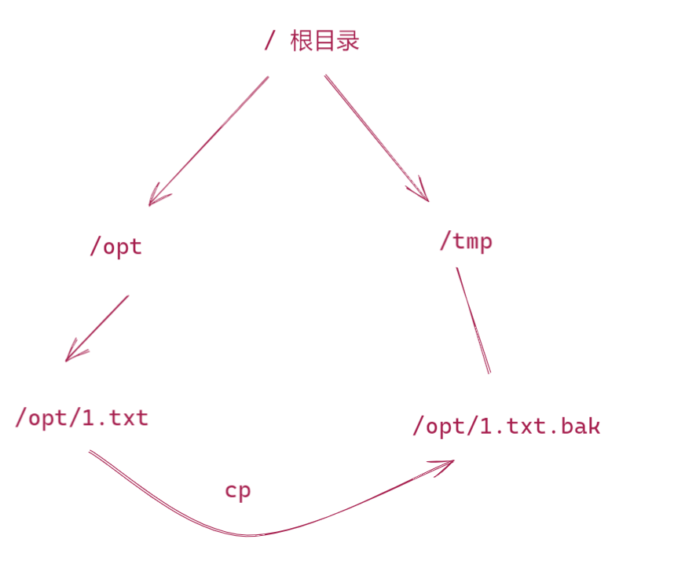
cp总结
1. cp拷贝文件，文件夹
2. 结合绝对，相对路径拷贝
3. 使用-r参数，可以递归拷贝文件夹及其内部文件
4. cp拷贝后可以直接重命名
问题：超哥在/opt下创建了一个linux.txt，需要拷贝到 /tmp下，名字改为linux.log
考虑多种情况，写写你的命令。
mv剪切操作
命令：mv （move，移动，剪切）
作用：可以在不同的目录之间移动文件或目录，也可以对文件和目录进行重命名
语法：#mv [参数] 源文件 目标路径（不指定文件名）
# 1.移动文件路径
[root@localhost opt]# ls
1.txt 1.txt.bak 2.txt 3.txt 4.txt 5.txt yuchao
[root@localhost opt]#
[root@localhost opt]# mv 1.txt /tmp/
[root@localhost opt]# ls /tmp/
1.txt
# 2.移动文件，且改名
[root@localhost opt]# mv /opt/2.txt /tmp/2.txt.bak
[root@localhost opt]# ls /tmp
1.txt 2.txt.bak
# 3. 移动文件夹路径，且默认就是递归移动
[root@localhost opt]# ls
1.txt.bak 3.txt 4.txt 5.txt yuchao
[root@localhost opt]# mv /opt/yuchao/ /tmp/
[root@localhost opt]#
[root@localhost opt]# ls /tmp/
1.txt 2.txt.bak yuchao
[root@localhost opt]# ls /tmp/yuchao/
linux01
# 4. 移动且重命名文件夹
[root@localhost opt]# ls
1.txt.bak 3.txt 4.txt 5.txt
[root@localhost opt]# ls /tmp/
1.txt 2.txt.bak yuchao
[root@localhost opt]#
[root@localhost opt]# mv /tmp/yuchao/ /opt/yuchao-bak
[root@localhost opt]# ls /tmp
1.txt 2.txt.bak
[root@localhost opt]# ls /opt/yuchao-bak/linux01/hehe.txt
/opt/yuchao-bak/linux01/hehe.txt
mv总结
1. 可以移动文件，文件夹路径，实现剪切效果
2. 剪切同时还可以进行重命名
3. 默认剪切文件夹，就是递归剪切
4. 到底是剪切效果，还是重命名效果，由你的写法决定
4、tar打包压缩与解压缩
打包，指的是一个文件或目录的集合，而这个集合被存储在一个文件中。
归档文件没有经过压缩，占用的空间是其中所有文件和目录的总和。
tar命令在linux系统里，可以实现对多个文件进行，压缩、打包、解包
打包
将一大堆文件或目录汇总成一个整体。
压缩
将大文件压缩成小文件，节省磁盘空间。
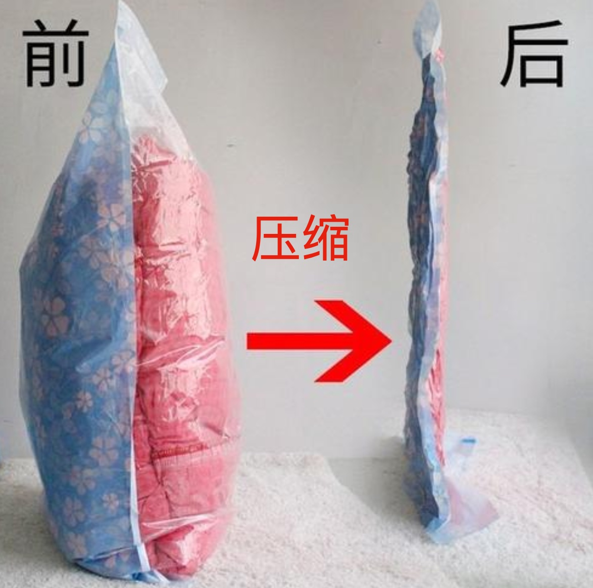
yuchao.txt 5MB
yuchao.log 200MB
yuchao.html 500MB
这仨文件，可以打包为一个文件， yuchao-all.tar
还可以进行压缩，节省空间， yuchao-all.tar.gz，也就是这整个的文件体积，小于上面3个文件的体积总和。
打包
命令：tar
作用：将多个文件打包成一个文件
语法：tar 选项 打包文件名 要打包的文件或目录
常见参数：-c，create 创建的意思
-v，显示打包文件过程
-f，指定打包的文件名，此参数是必须加的。
-u，update缩写，更新原打包文件中的文件（了解）
-t，查看打包的文件内容（了解）
提示：
- tar命令打包的文件，通常称为tar包，如 yuchao-all.tar文件
提问：
这个.tar是个谁看的？是给centos看的，还是给运维超哥看的？
练习
# 1.文件打成tar包，指定文件，进行打包
[root@localhost tmp]# cd /opt/
[root@localhost opt]# ls
1.txt.bak 3.txt 4.txt 5.txt yuchao-bak
[root@localhost opt]#
[root@localhost opt]# tar -cvf all-txt-opt.tar 1.txt.bak 3.txt 4.txt 5.txt
1.txt.bak
3.txt
4.txt
5.txt
[root@localhost opt]# ls
1.txt.bak 3.txt 4.txt 5.txt all-txt-opt.tar yuchao-bak
# 2.查看压缩文件内容
[root@localhost opt]#
[root@localhost opt]# tar -tf all-txt-opt.tar
1.txt.bak
3.txt
4.txt
5.txt
# 3. 再追加一个文件，塞进这个打包文件里
# 我们把整个文件夹，都塞进这个打包文件里
[root@localhost opt]#
[root@localhost opt]# tar -uf all-txt-opt.tar yuchao-bak/
[root@localhost opt]# tar -tf all-txt-opt.tar
1.txt.bak
3.txt
4.txt
5.txt
yuchao-bak/
yuchao-bak/linux01/
yuchao-bak/linux01/hehe.txt
打包并压缩（重点）
Linux下，常用的压缩工具有很多，比如 gzip、zip、bzip2、xz 等
tar 在打包的时候，是支持压缩的，gzip 、bzip2 、xz 压缩工具都可以在 tar 打包文件中使用。
命令：tar
作用：将多个文件打包并压缩成一个文件，其实就是tar命令的三个压缩参数
语法：tar 选项 打包文件名 要压缩的文件或目录
注意：并且压缩文件的名字，要根据你压缩时，选用的压缩参数，然后命名，做到见名知意。
常见参数：
-z，压缩为.gz格式
-j，压缩为.bz2格式
-J，压缩为.xz格式
-c，create 创建的意思
-x，解压缩
-v，显示打包文件过程
-f，file指定打包的文件名，此参数是必须加的。
-u，update缩写，更新原打包文件中的文件（了解）
-t，查看打包的文件内容（了解）
# 1.打包且压缩文件
[root@localhost opt]# echo chaoge{1..5000000} >> chaoge.txt
[root@localhost opt]# ll -h
total 66M
-rw-r--r--. 1 root root 66M Jan 5 17:41 chaoge.txt
[root@localhost opt]# touch {1..10}.txt
[root@localhost opt]#
[root@localhost opt]# ll -h
total 66M
-rw-r--r--. 1 root root 0 Jan 5 17:42 10.txt
-rw-r--r--. 1 root root 0 Jan 5 17:42 1.txt
-rw-r--r--. 1 root root 0 Jan 5 17:42 2.txt
-rw-r--r--. 1 root root 0 Jan 5 17:42 3.txt
-rw-r--r--. 1 root root 0 Jan 5 17:42 4.txt
-rw-r--r--. 1 root root 0 Jan 5 17:42 5.txt
-rw-r--r--. 1 root root 0 Jan 5 17:42 6.txt
-rw-r--r--. 1 root root 0 Jan 5 17:42 7.txt
-rw-r--r--. 1 root root 0 Jan 5 17:42 8.txt
-rw-r--r--. 1 root root 0 Jan 5 17:42 9.txt
-rw-r--r--. 1 root root 66M Jan 5 17:41 chaoge.txt
# 查看打包压缩后的文件大小，的确是省了很多
[root@localhost opt]# tar -zcvf all-opt.tar.gz chaoge.txt 1.txt 2.txt
chaoge.txt
1.txt
2.txt
[root@localhost opt]# ll -h
total 78M
-rw-r--r--. 1 root root 0 Jan 5 17:42 10.txt
-rw-r--r--. 1 root root 0 Jan 5 17:42 1.txt
-rw-r--r--. 1 root root 0 Jan 5 17:42 2.txt
-rw-r--r--. 1 root root 0 Jan 5 17:42 3.txt
-rw-r--r--. 1 root root 0 Jan 5 17:42 4.txt
-rw-r--r--. 1 root root 0 Jan 5 17:42 5.txt
-rw-r--r--. 1 root root 0 Jan 5 17:42 6.txt
-rw-r--r--. 1 root root 0 Jan 5 17:42 7.txt
-rw-r--r--. 1 root root 0 Jan 5 17:42 8.txt
-rw-r--r--. 1 root root 0 Jan 5 17:42 9.txt
-rw-r--r--. 1 root root 12M Jan 5 17:44 all-opt.tar.gz
-rw-r--r--. 1 root root 66M Jan 5 17:41 chaoge.txt
提示，也有的时候，会看到如all-opt.tgz 这样的文件名字，也表示是通过gzip命令压缩后的。
这是属于运维内默认的命名标准，当你看到.tgz .tar.gz 就知道，解压时候，需要通过gzip解压。
拆包、解包
解包，指的就是把前面打包好的文件，拆开为散的文件。
记忆方式：拆包，就是把参数c，改为参数x
# 1.找到你需要拆包的文件，
[root@localhost opt]# ll -h
total 132M
-rw-r--r--. 1 root root 0 Jan 5 17:42 10.txt
-rw-r--r--. 1 root root 0 Jan 5 17:42 1.txt
-rw-r--r--. 1 root root 0 Jan 5 17:42 2.txt
-rw-r--r--. 1 root root 0 Jan 5 17:42 3.txt
-rw-r--r--. 1 root root 0 Jan 5 17:42 4.txt
-rw-r--r--. 1 root root 0 Jan 5 17:42 5.txt
-rw-r--r--. 1 root root 0 Jan 5 17:42 6.txt
-rw-r--r--. 1 root root 0 Jan 5 17:42 7.txt
-rw-r--r--. 1 root root 0 Jan 5 17:42 8.txt
-rw-r--r--. 1 root root 0 Jan 5 17:42 9.txt
-rw-r--r--. 1 root root 66M Jan 5 18:18 all-opt.tar # 你看，这个未压缩的文件，没有节省空间
-rw-r--r--. 1 root root 66M Jan 5 17:41 chaoge.txt
# 2.解包
[root@localhost tmp]# tar -xvf all-opt.tar
./10.txt
./1.txt
./2.txt
./3.txt
./4.txt
./5.txt
./6.txt
./7.txt
./8.txt
./9.txt
./chaoge.txt
[root@localhost tmp]# ls
10.txt 1.txt 2.txt 3.txt 4.txt 5.txt 6.txt 7.txt 8.txt 9.txt all-opt.tar chaoge.txt
解压缩
解压缩就是比拆包，多了一个解压的参数 -z
# 打包+压缩
[root@localhost opt]# tar -zcvf all-opt.tar.gz ./*
./10.txt
./1.txt
./2.txt
./3.txt
./4.txt
./5.txt
./6.txt
./7.txt
./8.txt
./9.txt
./chaoge.txt
# 解包+解压缩
[root@localhost tmp]# tar -zxvf all-opt.tar.gz
./10.txt
./1.txt
./2.txt
./3.txt
./4.txt
./5.txt
./6.txt
./7.txt
./8.txt
./9.txt
./chaoge.txt
tar总结
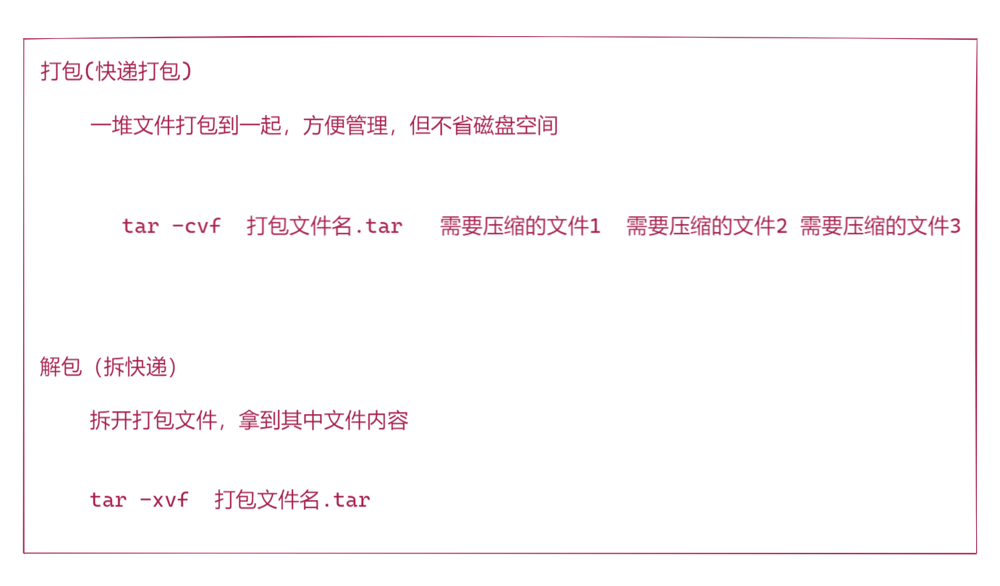
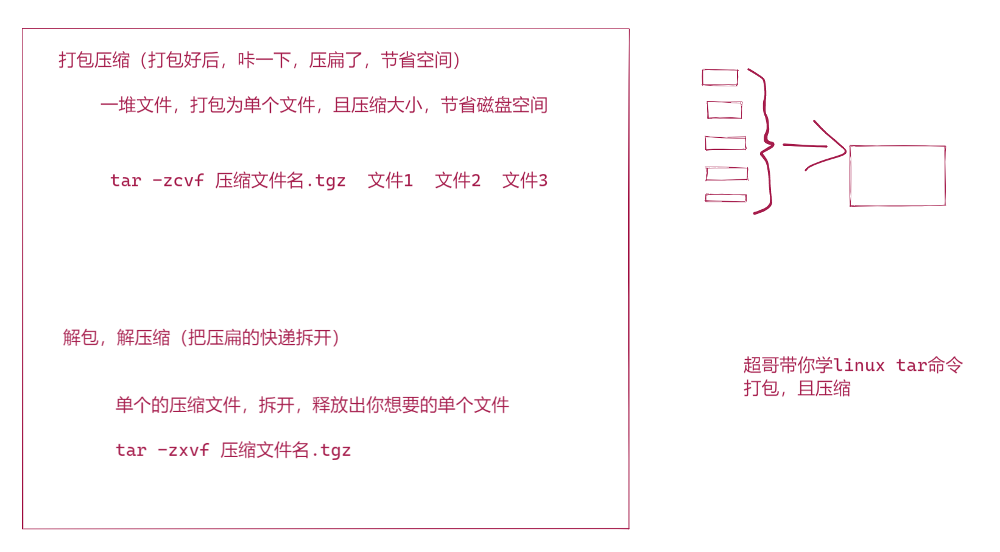
教你一招，tar还能让你更省心
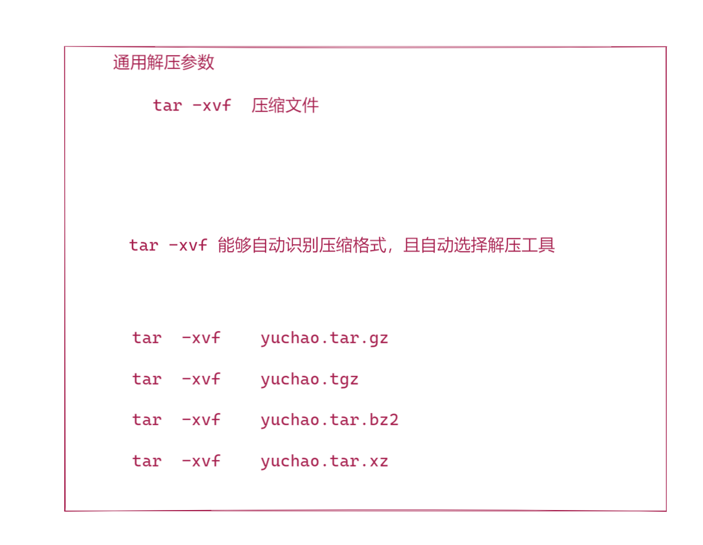
思考题
如果我把文件名给改了，压缩文件还可以用吗？
[root@localhost tmp]# ll
total 11592
-rw-r--r--. 1 root root 11867538 Jan 5 18:21 all-opt.tar.gz
# 改名字
[root@localhost tmp]# mv all-opt.tar.gz all-opt
[root@localhost tmp]# ll
total 11592
-rw-r--r--. 1 root root 11867538 Jan 5 18:21 all-opt
# 还可以解压吗？为什么?名字不是变了吗
5、zip压缩与解压缩（了解）
一般见的较多的，就是tar包，zip包
zip压缩
命令：zip
作用：兼容类unix与windows，可以压缩多个文件或目录
语法：zip [参数] 压缩后的文件 需要压缩的文件(可以是多个文件)
参数选项：-r 递归压缩（压缩文件夹）
注意：
zip压缩默认压缩后的格式就是.zip，生成的压缩文件，自带zip
建议主动添加后缀.zip，一般都加上，这是个好习惯
语法
zip 压缩文件.zip 文件1 文件2 文件3 ...
案例，压缩文件
[root@localhost opt]# zip all-opt.zip chaoge.txt 1.txt
adding: chaoge.txt (deflated 83%)
adding: 1.txt (stored 0%)
# zip同样完成打包，压缩效果
[root@localhost opt]#
[root@localhost opt]# ll -h
total 78M
-rw-r--r--. 1 root root 0 Jan 5 17:42 10.txt
-rw-r--r--. 1 root root 0 Jan 5 17:42 1.txt
-rw-r--r--. 1 root root 0 Jan 5 17:42 2.txt
-rw-r--r--. 1 root root 0 Jan 5 17:42 3.txt
-rw-r--r--. 1 root root 0 Jan 5 17:42 4.txt
-rw-r--r--. 1 root root 0 Jan 5 17:42 5.txt
-rw-r--r--. 1 root root 0 Jan 5 17:42 6.txt
-rw-r--r--. 1 root root 0 Jan 5 17:42 7.txt
-rw-r--r--. 1 root root 0 Jan 5 17:42 8.txt
-rw-r--r--. 1 root root 0 Jan 5 17:42 9.txt
-rw-r--r--. 1 root root 12M Jan 6 09:23 all-opt.zip
-rw-r--r--. 1 root root 66M Jan 5 17:41 chaoge.txt
案例，压缩文件夹
[root@localhost opt]# zip -r all-opt2.zip yuchao chaoge.txt
adding: yuchao/ (stored 0%)
adding: yuchao/linux/ (stored 0%)
adding: yuchao/linux/day01/ (stored 0%)
adding: chaoge.txt (deflated 83%)
unzip解压缩
解压缩需要使用另一个命令
功能说明：解压缩zip文件，unzip为.zip压缩文件的解压缩程序。
语法：unzip 压缩文件.zip -d 需要解压到哪个目录
[root@localhost opt]# ll
total 90460
-rw-r--r--. 1 root root 0 Jan 5 17:42 10.txt
-rw-r--r--. 1 root root 0 Jan 5 17:42 1.txt
-rw-r--r--. 1 root root 0 Jan 5 17:42 2.txt
-rw-r--r--. 1 root root 0 Jan 5 17:42 3.txt
-rw-r--r--. 1 root root 0 Jan 5 17:42 4.txt
-rw-r--r--. 1 root root 0 Jan 5 17:42 5.txt
-rw-r--r--. 1 root root 0 Jan 5 17:42 6.txt
-rw-r--r--. 1 root root 0 Jan 5 17:42 7.txt
-rw-r--r--. 1 root root 0 Jan 5 17:42 8.txt
-rw-r--r--. 1 root root 0 Jan 5 17:42 9.txt
-rw-r--r--. 1 root root 11867850 Jan 6 09:30 all-opt2.zip
-rw-r--r--. 1 root root 11867526 Jan 6 09:26 all-opt.zip
-rw-r--r--. 1 root root 68888896 Jan 5 17:41 chaoge.txt
drwxr-xr-x. 3 root root 19 Jan 6 09:30 yuchao
[root@localhost opt]#
[root@localhost opt]# unzip all-opt.zip -d /tmp/
Archive: all-opt.zip
inflating: /tmp/chaoge.txt
extracting: /tmp/1.txt
[root@localhost opt]#
[root@localhost opt]#
[root@localhost opt]# ls /tmp/
1.txt chaoge.txt
当然也可以直接解压到当前位置
[root@localhost tmp]# unzip all-opt.zip
zip和unzip总结
1.zip是对文件压缩，可以压缩多个文件，生成 如chaoge.zip
2.添加-r参数，可以压缩文件夹
3.解压缩，需要用unzip，就多了俩字母，添加-d参数可以指定加压到哪里
zip yuchao.zip linux01.txt
unzip yuchao.zip
unzip yuchao.zip -d /tmp/
三、VIM文件编辑器概述
测试数据
I have a dog. My dog name is DuDu. DuDu is 9 years. DuDu is fat. It wears a white coat. DuDu has two big eyes and two small ears. It has one short mouth. My dog is smart. I like my dog. Do you like it?
我有一只狗。我的狗的名字叫嘟嘟。嘟嘟是9年。嘟嘟胖。它穿着一件白色外套。嘟嘟有两个大眼睛和两个小耳朵。它有一个短嘴。我的狗是聪明的。我喜欢我的狗。你喜欢吗?
Vim文本编辑器，是由 vi 发展演变过来的文本编辑器，使用简单、功能强大、是 Linux 众多发行版的默认文本编辑器。
超哥提醒：使用vim 输入法保持是英文输入法状态。
1、vi编辑器
vi（visual editor）编辑器通常被简称为vi，它是Linux和Unix系统上最基本的文本编辑器，类似于Windows 系统下的notepad（记事本）编辑器。
windows下的文本编辑器
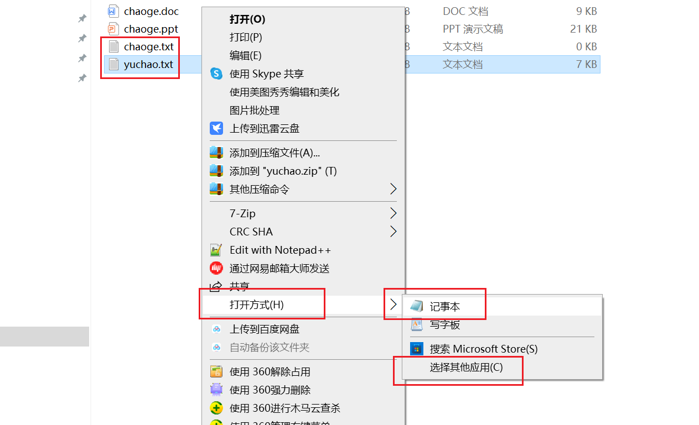
linux下的文本编辑器，vi
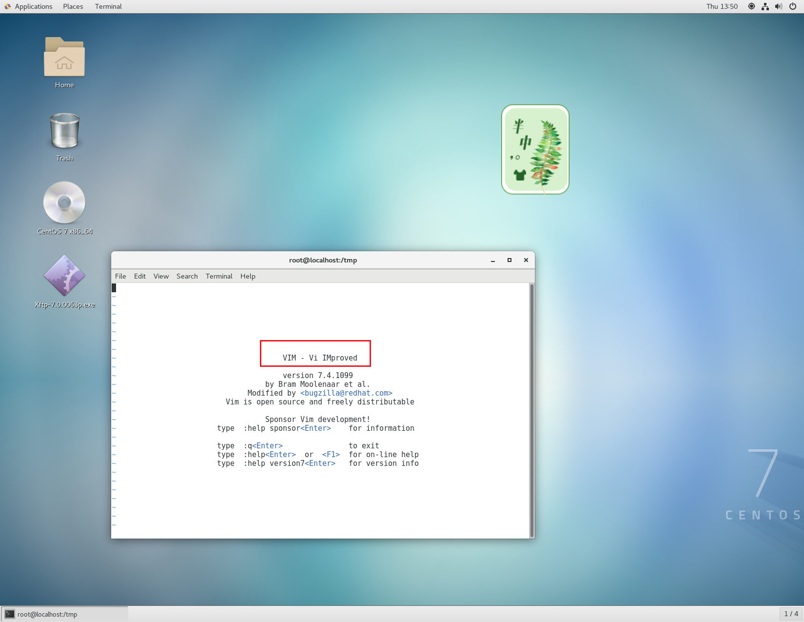
由于是linux环境，不像windows那样操作简单，点点就可以使用编辑器，写入数据，保存文件。
linux的文件操作，都是要通过指令才能操作。
由于vi编辑器，功能较少，如同记事本一样，比较难用，我们会选择更驻主流，强大的vim，多了一个字母。
这就好比记事本难用，我们安装如sublime、notepad++这些编辑器一样，特点：
- 需要额外安装
- 功能更多
2、vim编辑器
有的 Unix Like 系统都会内建 vi 文书编辑器，其他的文书编辑器则不一定会存在。
但是目前我们使用比较多的是 vim 编辑器。
vim 具有程序编辑的能力，可以主动的以字体颜色辨别语法的正确性，方便程序设计。
Vim是从 vi 发展出来的一个文本编辑器。代码补完、编译及错误跳转等方便编程的功能特别丰富，在程序员中被广泛使用。
简单的来说， vi 是老式的字处理器，不过功能已经很齐全了，但是还是有可以进步的地方。
vim 则可以说是程序开发者的一项很好用的工具。
1.vim编辑器需要额外安装，centos通过yum命令安装（需要机器正确配置网络，联网下载）
yum install vim -y
2.如果你是跟着超哥安装的linux系统步骤，那已经装好了vim了。
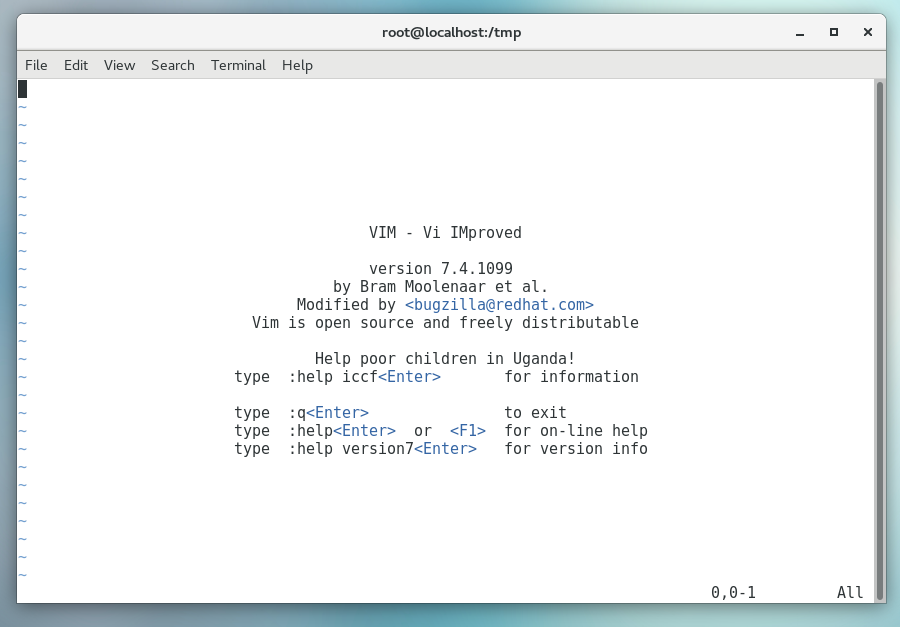
验证是否有vim，在命令行输入vim即可。
[root@localhost tmp]# vim
如果提示，vim命令不存在，则你需要安装
command not found # 命令找不到
3、vim编辑器使用教程
基本上 vi/vim 共分为三种模式，分别是：
命令模式（Command mode）
- 当你使用vim 标记某个文件时，第一步就进入了命令模式。
- 可以移动光标位置，输入快捷键指令，对文件进行编辑，如插入字符，复制，粘贴，删除等操作
输入模式（Insert mode）
- 可以对文件内容进行编辑。
末行模式（Last line mode）底线模式
- 进行一些特殊操作，如文本信息的查找，替换，保存，退出等；
还有一种特殊的可视化模式，用于批量的列选操作。
4、图解vim使用流程
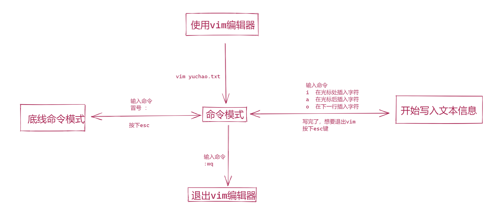
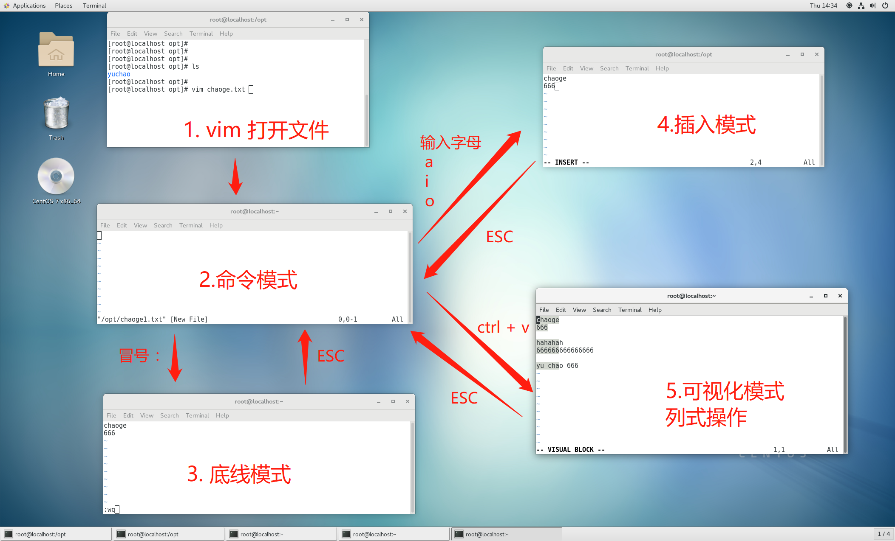
5、vim实践
写入一首诗
清明
清明时节雨纷纷
孤家寡人欲断魂
借问美女何处有
路人遥指三里屯
春晓
春眠不觉晓
理工美女少
夜来睡不着
俺去网上找
实践
注意，如果要输入中文的话，vmware里的linux图形化界面可能不支持，需要额外配置。
建议后期，学习远程连接后，再进行中文写入。
所以这里，写入简单的英文即可。
5.1 vim打开文件
命令：vim
作用： 编辑器，修改文件内容；文件若不存在，默认创建该文件。
语法：vim yuchao.txt
[root@localhost opt]# vim chaoge.txt
此时就进入了命令模式
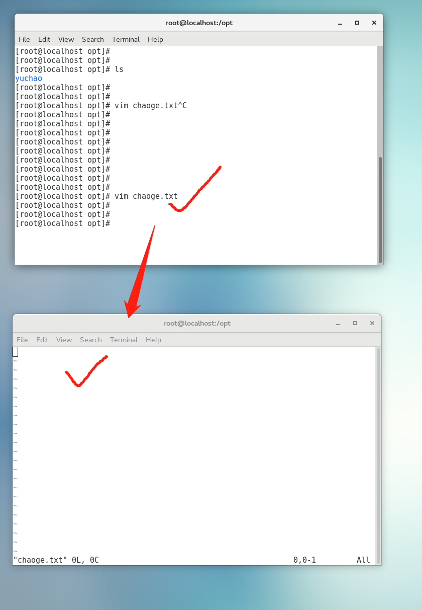
5.2 vim保存且退出
任何模式下，都可以按下ESC键，回到命令模式，然后可以退出vim。
输入
:wq
: 进入底线模式
w write 写入
q quit 退出
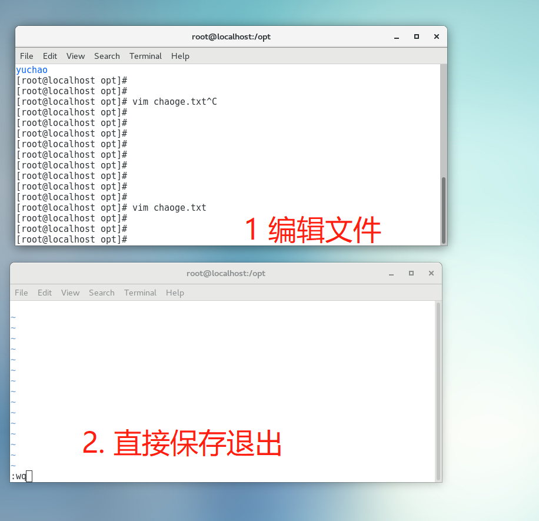
5.3 vim不保存且退出
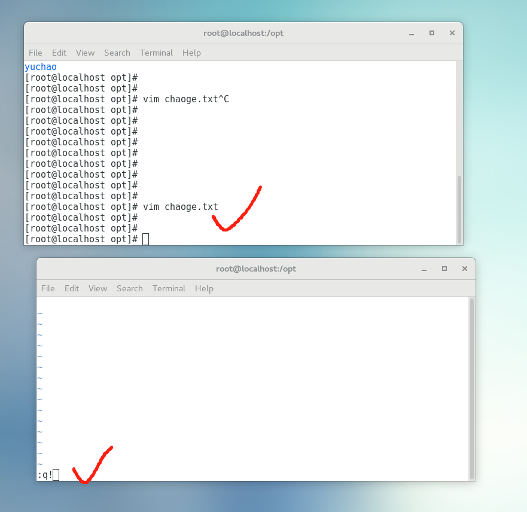
当你写错了，不想保存，就直接退出即可。但是一般要加上感叹号，强制该操作。
:q!
: 底线模式
q quit 退出
! 强制性
6、vim重点（命令模式）
6.1 进入命令模式
请回答怎么进入命令模式？
6.2 光标移动
进入命令模式后，可以移动光标，选择字符。
可以用如下步骤，快速写入一些文本信息
1.打开文件
2.进入编辑模式，写入内容
3.保存退出
[root@localhost opt]# cat chaoge.txt
hello,my name is yuchao.
i will teach you to learn linux.
good good study, day day up !!
上下左右键
方法1：光标移动、上下左右
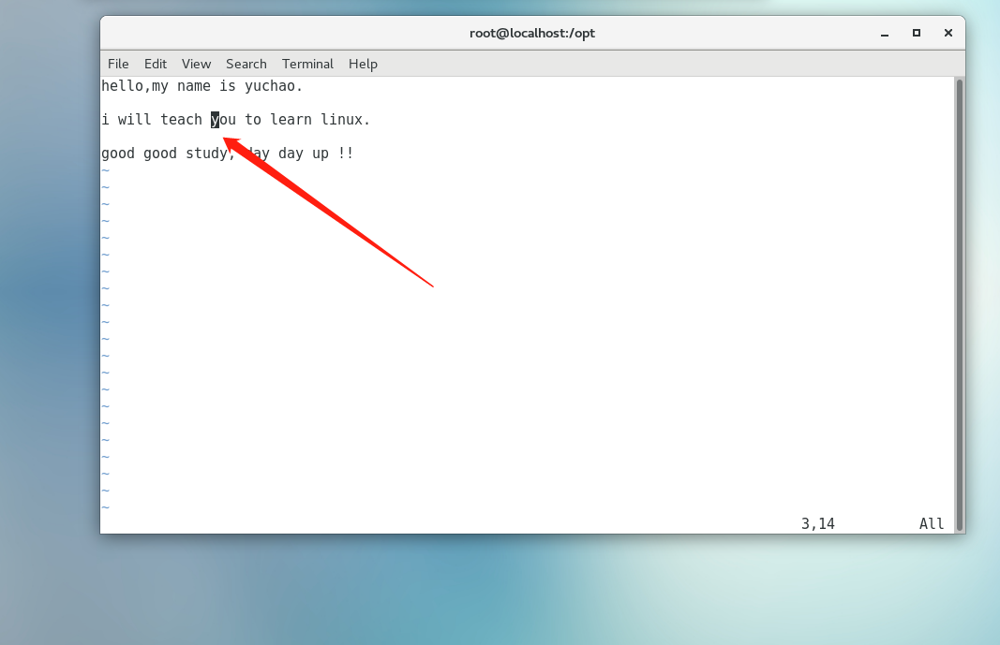
方法2：四个字母 h、j、k、l，防止有的键盘没有上下左右
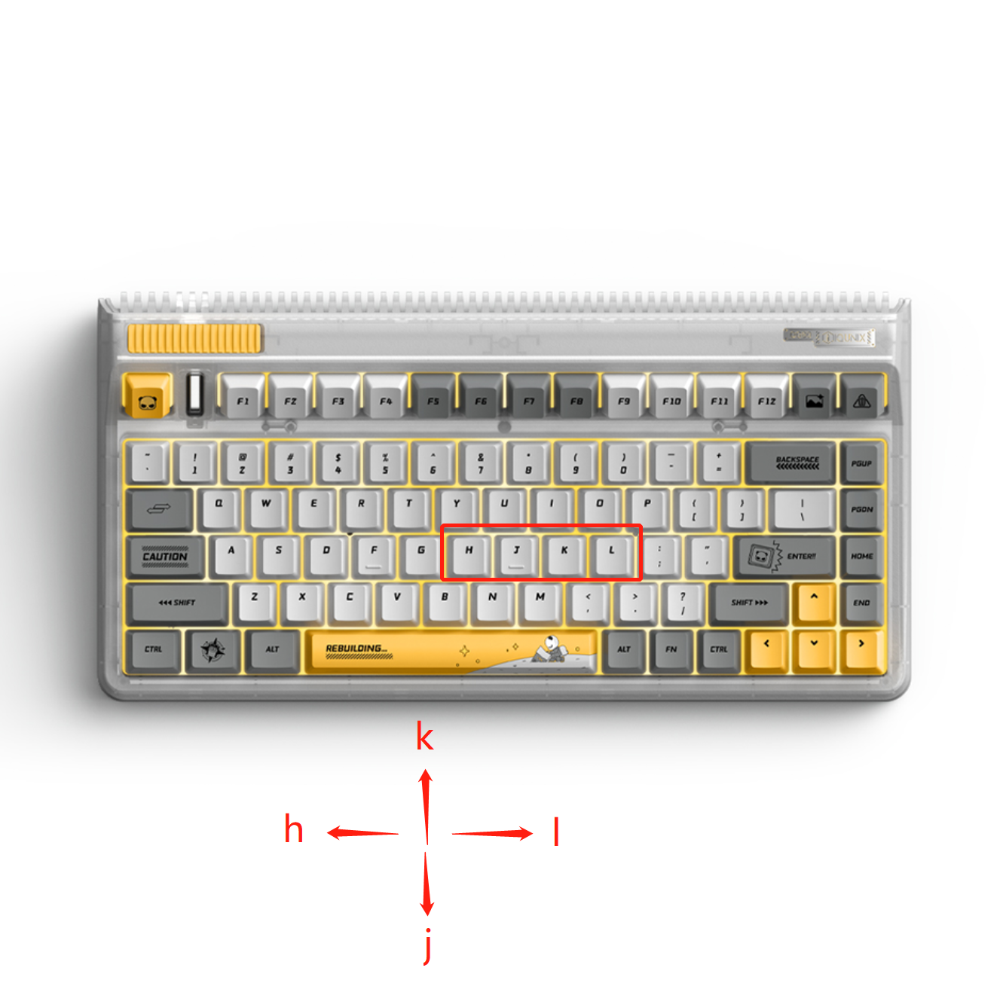
行首、行尾
1、行首、光标移动到文件第一行（行首）
gg 移动光标到文档的首行
G 移动光标到文档尾行 【按下 shitf + g】
翻屏
适用于阅读内容较多的文本文件，一页屏幕，只能看到部分内容。
整页翻页命令为： Ctrl + f 键 f 的英文全拼为：forward；
Ctrl + b 键 b 的英文全拼为：backWord；
翻半页命令为： Ctrl + d 键 d 的英文全拼为：down；
Ctrl + u 键 u 的英文全拼为：up；
准备如下测试数据，查看翻页作用
# 生成100行数字
[root@localhost opt]# seq 100 > chaoge.txt
# 打开文件，练习翻页效果
ctrl+u/d
一屏就显示10行，翻半页，每次翻5行，理解半页。
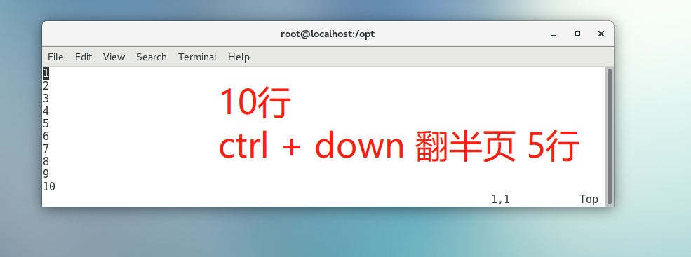
ctrl + up 和down 相对，向上5行。
ctrl + f /b
整页翻页，保留2行信息。
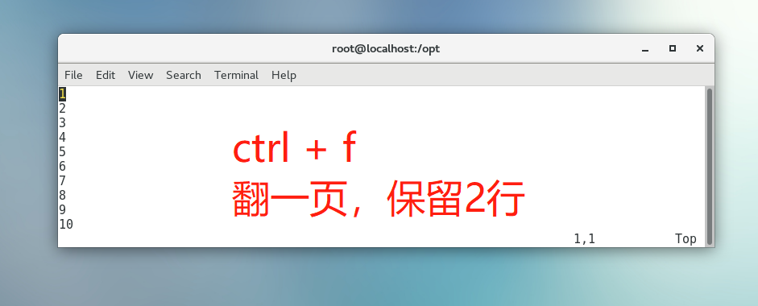
定位到指定行（重点）
工作里，经常会遇见代码部署时出现报错信息，且程序会自动告诉你大约哪一行出错了，你得快速找到那一行。
比如如下报错
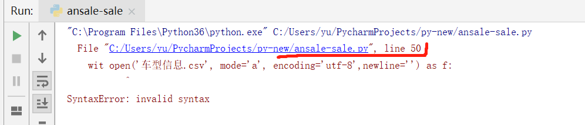
就是告诉你，第50行出错了。
操作方式：
按下，行号 + G，即可快速跳转
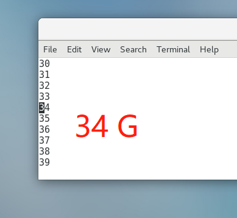
6.3 复制、粘贴
指令： yy
作用：复制光标所在行
指令：p
作用：移动光标到你想要粘贴的行，按下p，将粘贴到下一行，按下大写P，粘贴到上一行。
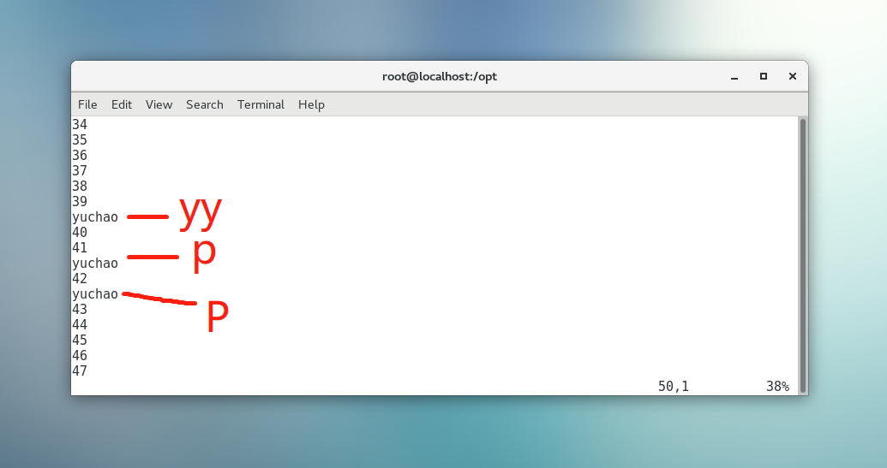
6.4 剪切、删除
语法
1.指令：dd
作用： 剪切、剪切后可以自己选择是否粘贴（剪切后若是不粘贴，就是删除的效果）
2.指令：数字 + dd
作用：剪切指定的行，包括当前行
3.指令： D
作用： 删除当前行、光标处、以及后续内容。
dd
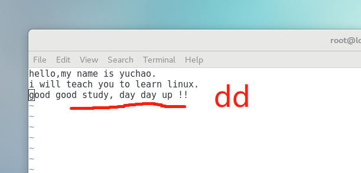
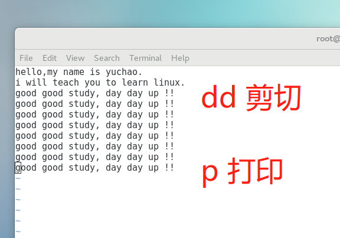

2dd
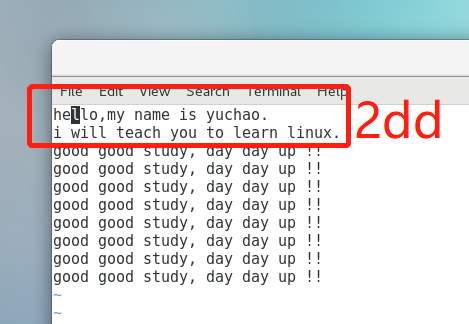
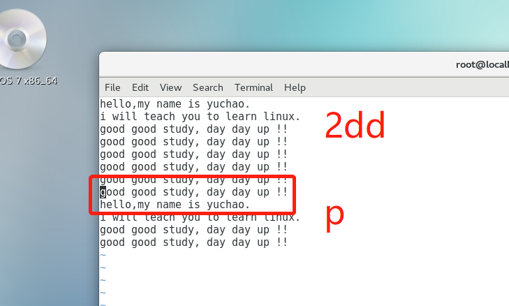
D
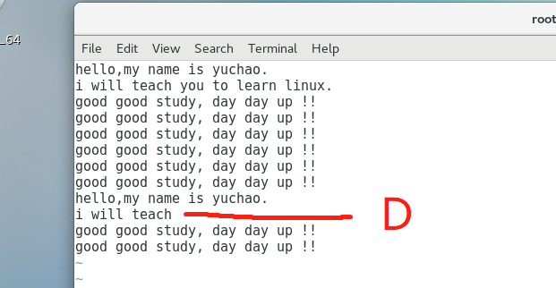
6.5 撤销、恢复
指令：u （undo）（撤销上一次的动作，比如你写下了 '于超老师真帅'）
恢复：ctrl + r 恢复（你撤销后，又后悔了？redo 重做）
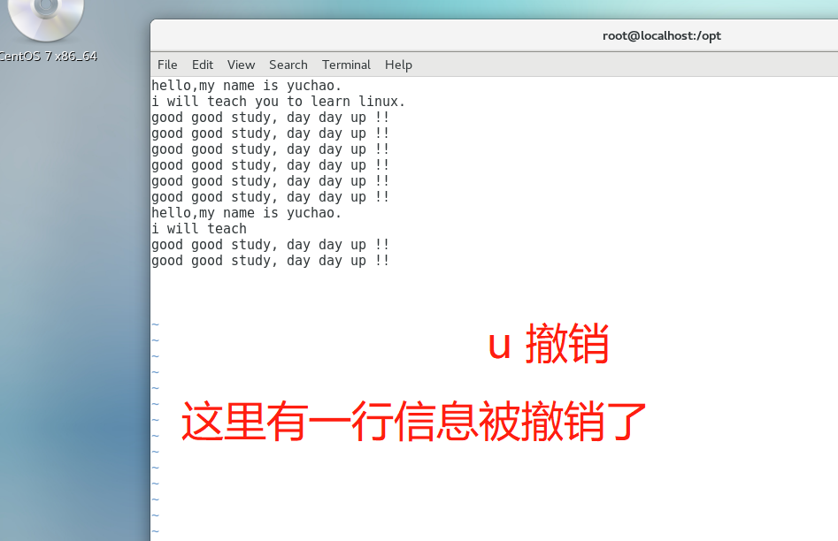
7. vim底线模式（重点）
7.1 进入底线模式
进入底线模式流程
1.按下ESC，按2次
2.确保底线中没有其他字符
3.输入冒号 或者斜线（表示查找功能）
7.2 写入数据write
指令：
:w 保存写入
:w /tmp/yuchao.txt 另存为文件
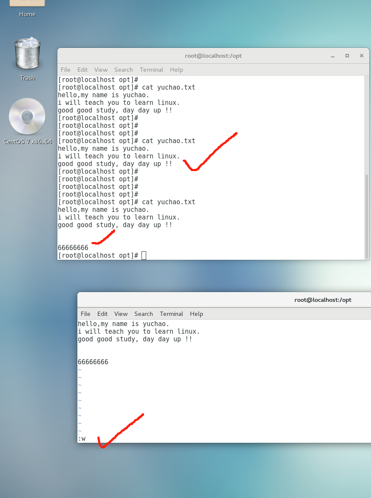
另存为
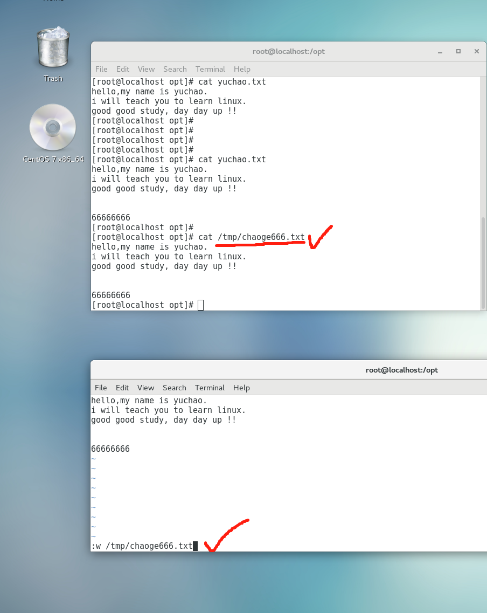
7.3 退出quit
指令：
:q 退出文件，不保存操作
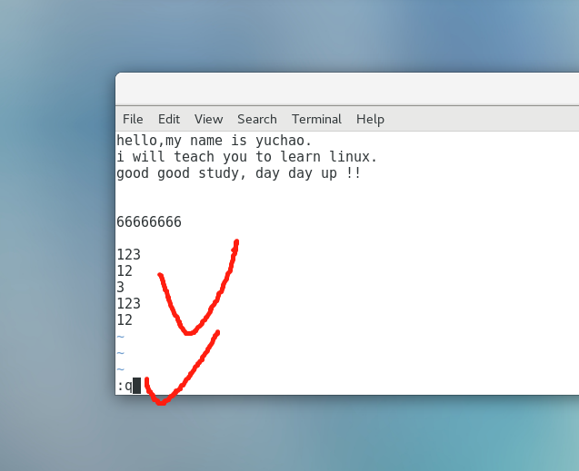
想退出，必须添加感叹号。
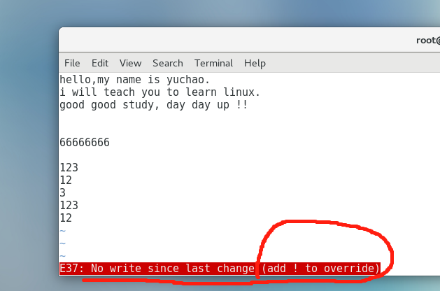
7.4 保存且退出（重点）
当你确认你写的内容，需要保存到文件里，就输入wq
输入 :wq
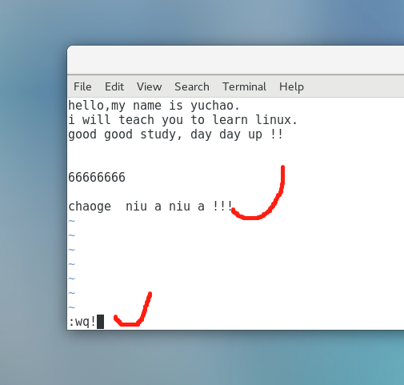
7.5 强制，感叹号
当你做了打开文件，不想对文件做任何修改，就是打开看看，啥也不变，就强制退出即可。
输入
:q!
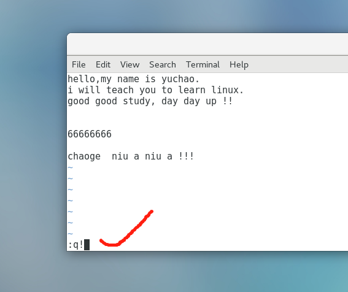
7.6 搜索、查找
查找你想要的内容，语法
当我们以后编辑代码，编辑配置文件，找到你想要的信息，就可以这样找。
# 找到包含yuchao的文本内容
/yuchao
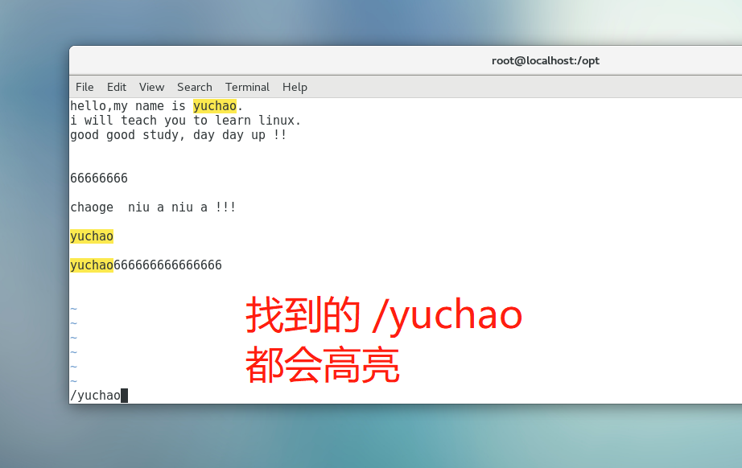
取消查找的高亮，输入指令
单词意思 no highlight
简写的指令
:noh
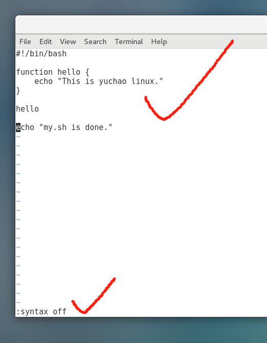
7.7 替换
单行替换
当我们修改配置文件，修改代码文件，或者各种文件，可以使用替换的功能，来批量修改你想要的数据。
超哥提醒：但是前提你要注意，别全局替换，换错了数据！！
单行替换，替换一次
:s/源内容/新内容/
替换前
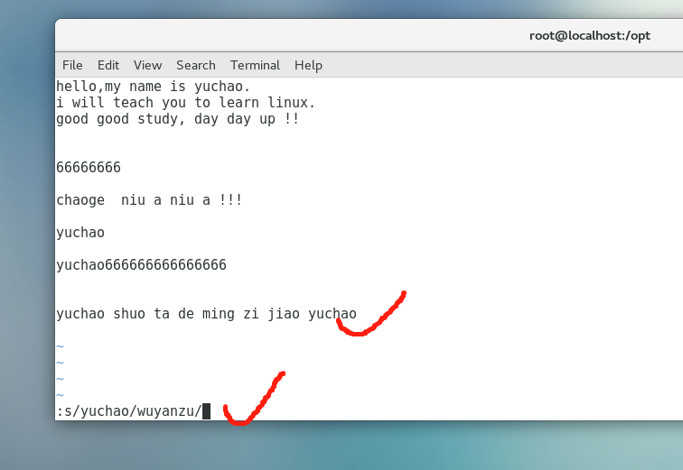
替换后
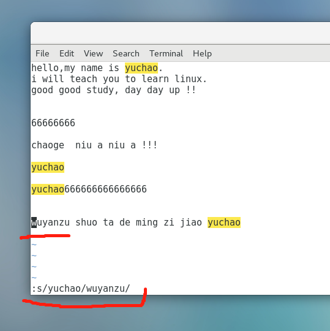
发现的确就替换了一次
如何替换单行中，所有的字符？
指令，多了一个g
:s/源内容/新内容/g
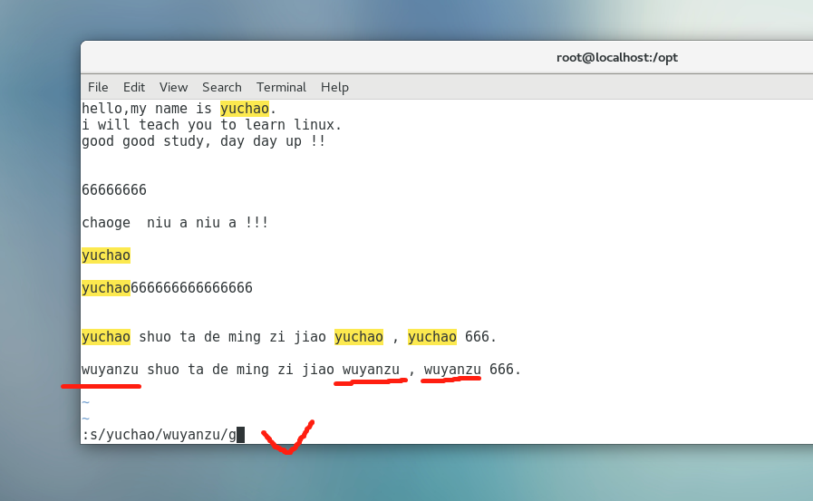
全篇替换
刚才我们是修改单行中的字符内容，吧yuchao替换为了wuyanzu。
如果你要修改整篇文章里的一个字符，可以用如下全篇替换。
语法，多了一个百分号，替换整篇文章中，第一个匹配上的字符
:%s/yuchao/wuyanzu/
替换整篇文档中，彻底所有符合的条件，说白了就是把全篇文章，所有的yuchao，替换为wuyanzu
:%s/yuchao/wuyanzu/g
全篇替换，只替换每一行找到的第一个
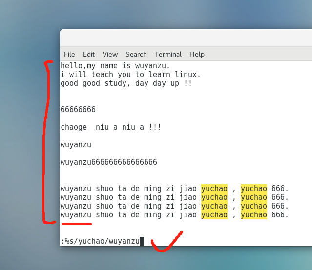
全篇替换，真正的全文替换。
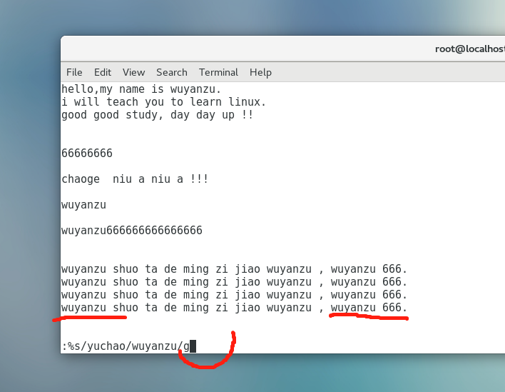
比如你修改一个脚本，有一个变量名字多次被调用，名字得改，可以利用全篇替换。
7.8 显示行号
当你打开一个文件，发现内容很多，但是没有行号，多少有点难以阅读，以及不好确定具体的配置行号。
指令
:set nu
表示 set number
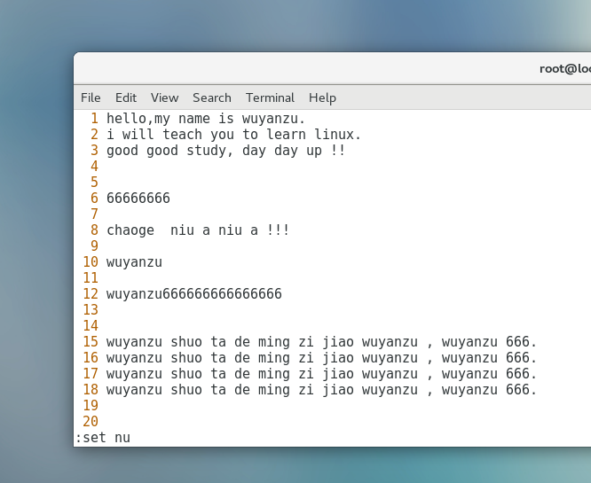
取消行号，比如你要复制多行的数据，不想要行号了
:set nonu
表示 set nonumber 就是不要number了
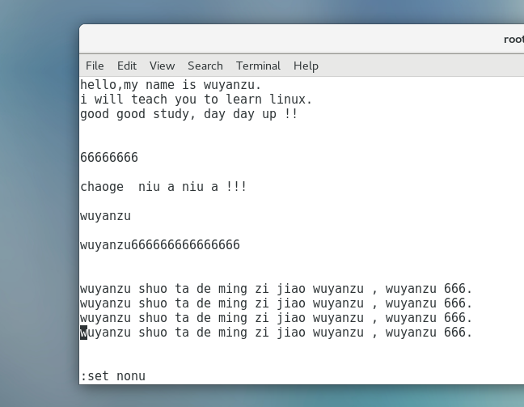
7.9 paste模式
日常工作中，我们会频繁的复制粘贴各种配置，并且大多数配置文件，都是有格式，有缩进的，如
apiVersion: apps/v1
kind: Deployment
metadata:
name: nginx-deployment
spec:
selector:
matchLabels:
app: nginx
replicas: 2 # tells deployment to run 2 pods matching the template
template:
metadata:
labels:
app: nginx
spec:
containers:
- name: nginx
image: nginx:1.14.2
ports:
- containerPort: 80
这一段配置文件，如果你直接ctrl + c/v 复制到linux中，vim是无法保证其格式的，那么这个配置文件就无法使用了。
还好vim提供了粘贴模式，能够完全保证复制的格式。
指令
:set paste 粘贴模式
:set nopaste 取消粘贴模式
1.进入粘贴模式
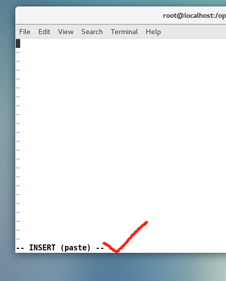
2.复制粘贴
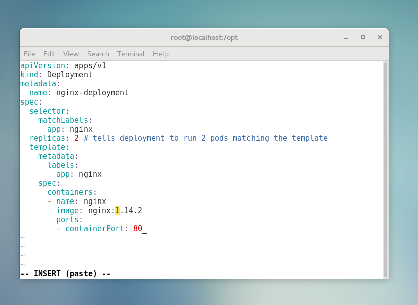
3.保存退出即可。
8.编辑模式
1.按字母a、i、o进入编辑模式
2.按ESC退出编辑模式，回到命令模式
9. 可视化模式
操作流程
1.进入可视化模式
ctrl + v
2.
方向键选择需要的可视化块
选择好后，可以进行操作，比如复制，比如删除
按下y 复制
按下d 删除
3.按下p
进行粘贴
4.退出可视化
按下ESC
9.1 选中复制
在你想复制的地方，光标所在的地方，按下ctrl + v，从光标处进入可视化模式
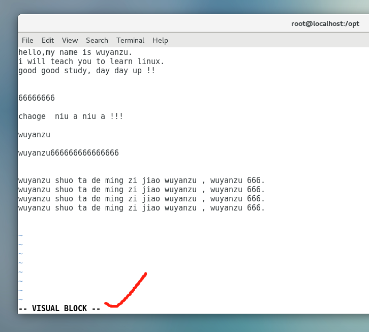
复制你想要的区域
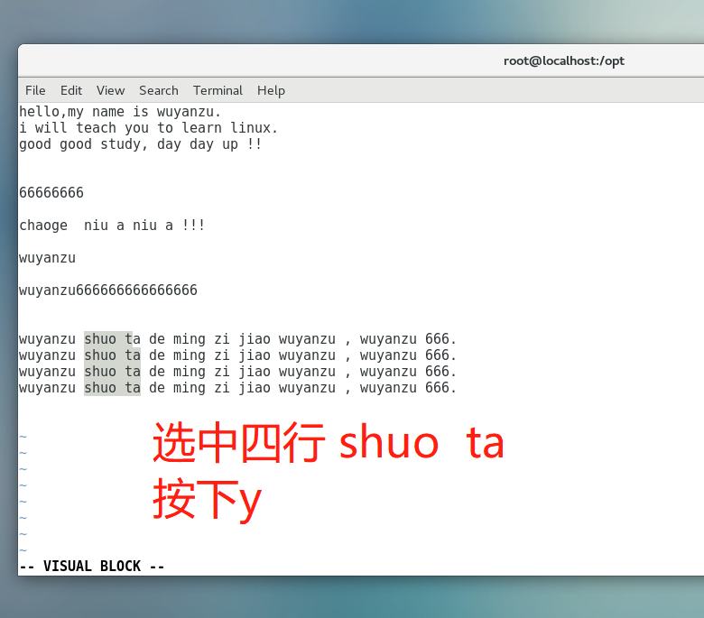
p粘贴
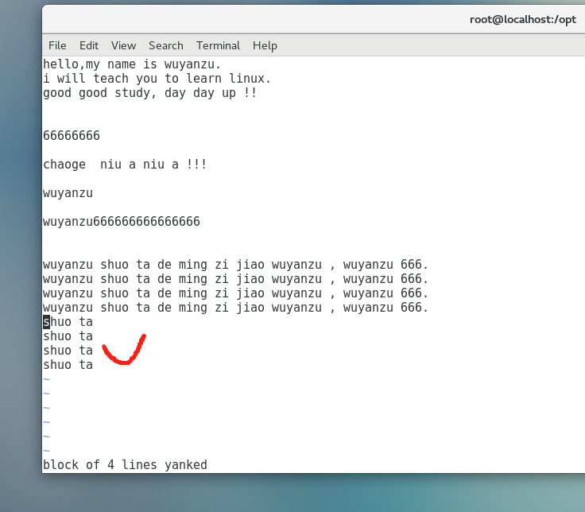
9.2 选中删除
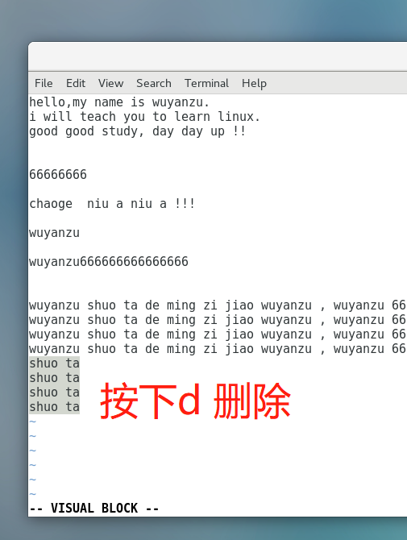
9.3 批量添加注释
注释指的是，备注、解释，一般用于大多数编程语言的脚本中，不会被加载的行，例如。
# def get_page_source(url):
# resp = requests.get(url)
# resp.encoding = 'gbk'
# return resp.text
print("hello world")
1.先进入命令模式，按下ESC，再按下ctrl + v ，进入可视化块
2.选中你想添加注释的行
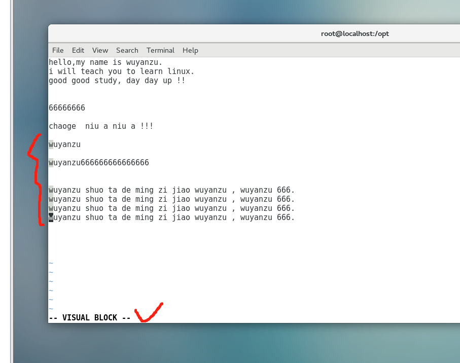
3.按下大写的字母I键，进入插入模式
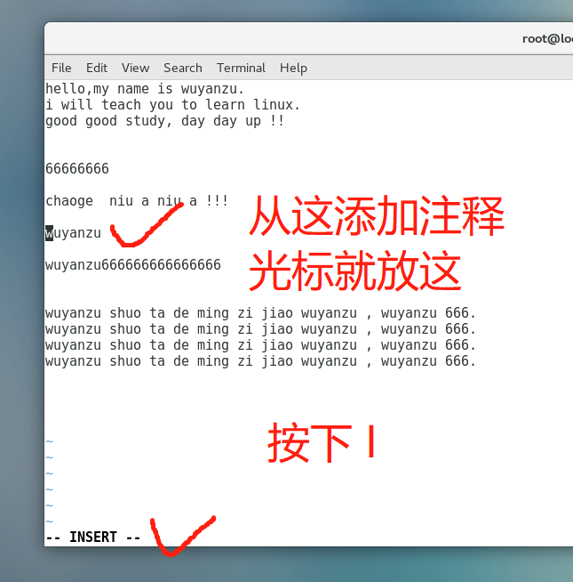
4.输入井号，#
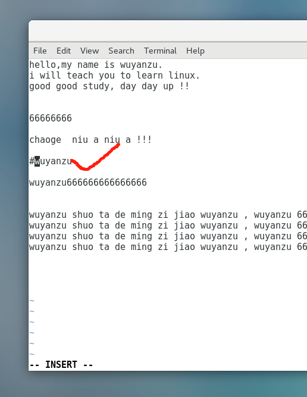
5.按下ESC键，自动就出现了多行注释 #
9.4 删除多行注释
反之有时候我们要批量删除注释
1.按下ESC进入命令模式
2.按下ctrl + v 进入可视化块模式
3.批量选中注释符，删除
10.彩色vim模式
颜色是这个世界很美丽的存在。
比如
又比如
加上颜色，是编辑器提供的功能，对一些关键字进行颜色高亮标识，就能让我们很容易的区分出，哪些是默认的关键字，哪些是我们自己写的程序。
总之，颜色让你轻松分辨出重要信息
vim是vi编辑器的升级版，很多大牛程序员能够直接在linux下使用vim开发，其作用是针对不同的编程语言，来识别不同的语法高亮着色。
10.1 shell
没有颜色
:syntax off 语法颜色关闭
打开颜色
:syntax on
10.2 python
11.vim故障处理
当咱使用vim编辑器时，会遇见这样的一个错误界面，且很常见。
什么时候会出现这个故障
（执行以下操作，能复现出这个swp故障）
- 当多个人同时编辑了同一个文件，yuchao.txt
- 当超哥编辑yuchao.txt时候，不小心关闭了窗口，或者机器突然断电关机了，这个文件还没保存。
11.1 解决swp
解决办法其实vim都有告诉你
但是或许大家还不清楚怎么解决
11.2 模拟文件异常关闭
1. vim chaoge.txt 正常编辑文件
2. 写入信息 chaoge 666 ，编辑过程中，直接关闭窗口，模拟断电
3. 此时你再访问文件，会发现，多了一个隐藏文件
[root@localhost opt]# ll -a
total 12
drwxr-xr-x. 2 root root 29 Jan 6 20:33 .
dr-xr-xr-x. 17 root root 224 Jan 5 14:48 ..
-rw-------. 1 root root 12288 Jan 6 20:33 .chaoge.txt.swp
问题来了，刚才你写的 chaoge 666 去哪了？这是你写的，还未保存的数据，是要恢复，还是丢弃？
11.3 恢复未保存的数据
1. 继续打开文件
vim chaoge.txt
2. 发现swp错误提示
输入R ，recover恢复
3.继续编辑，然后正常保存退出
:wq!
4.删除swp文件即可
[root@localhost opt]# ls -a
. .. chaoge.txt .chaoge.txt.swp
[root@localhost opt]#
[root@localhost opt]# vim chaoge.txt
[root@localhost opt]# rm -f .chaoge.txt.swp
11.4 不恢复，直接删除
当你确认未保存的数据不重要时，你可以选择直接丢弃即可，两个办法
1.直接删除.swp文件，使用rm命令删除.swp即可。
2.使用vim提供的指令，忽略，删除swp文件。
vim关于swp总结
文件异常退出的话，vim会自动生成swp文件，保护你的未保存数据，你可以选择，是否保留这些数据。
今日学习总结
- 学习关于linux的文件操作
- 文件命名规则
- 文件管理命令
- mkdir、rmdir
- touch、rm
- cp、mv
- tar、zip、unzip
- 文本编辑器vim
今日作业
整理学习笔记，使用笔记+大脑，双重保障，理解+记忆知识点，要做到：
- 理解每一小节知识点，如linux命令的语法、作用
- 实践操作所学linux命令，动手敲打，真切感受和linux系统交互的过程
- 记录练习过程中的操作，整理像超哥一样的笔记文档（专属你自己，最适合你自己阅读的文档）
加油，兄弟们，未来很美好。